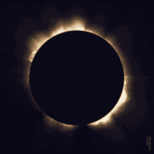

Gerhana (Al-Kusuf dan Al-Khusuf)
Dalam Islam, gerhana matahari dan bulan dikenal dengan istilah yang berbeda:
- Gerhana Matahari (Al-Kusuf): Terjadi ketika posisi bulan berada di antara bumi dan matahari, sehingga bayangan bulan menutupi sebagian atau seluruh cahaya matahari yang sampai ke bumi.
- Gerhana Bulan (Al-Khusuf): Terjadi ketika bumi berada di antara matahari dan bulan, sehingga bayangan bumi menutupi bulan.

Gambar matahari dan bulan Ketika terjadi gerhana.
Tata Cara Singkat Shalat Gerhana
Dalam Islam terdapat anjuran untuk melaksanakan shalat sunnah gerhana, baik gerhana matahari maupun bulan.
- Niat: Niat shalat gerhana matahari (kusuf) atau bulan (khusuf).
- Rakaat Pertama:
- Takbiratul ihram.
- Membaca Al-Fatihah dan surat panjang.
- Rukuk.
- I'tidal.
- Berdiri lagi: Membaca Al-Fatihah dan surat yang lebih pendek.
- Rukuk kedua.
- I'tidal kedua.
- Sujud dua kali.
- Rakaat Kedua: Sama seperti rakaat pertama, tetapi dengan bacaan surat yang lebih pendek.
- Tasyahud dan Salam.
- Setelah Shalat: Dianjurkan untuk mendengarkan khutbah.
Hikmah di Balik Shalat Gerhana
- Mengingat Kekuasaan Allah
- Wujud Ketakutan dan Harapan
- Memperbanyak Ibadah
- Menghilangkan Keyakinan Syirik
Uji Pemahaman Anda
Setelah mempelajari materi gerhana, ayo uji pemahaman Anda dengan kuis singkat!
Mulai Kuis